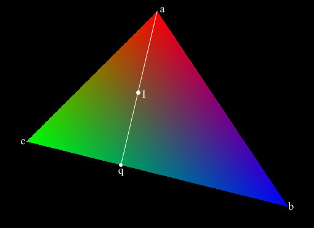

|
Interpolating Normals For Ray-Tracing
Question submitted by (21 September 2001)

|
 |
|
 |
| |
I have a problem about raytracing. When my raytracer found an intersection with
a polygon, it always use the normal of polygon to compute shade. This give to
the image an faceted look. I read that to avoid this problem is necessary to use
interpolated vertex normals. I have already computed the vertex normals, but
it's are only in the VERTEXES of poly. How I can compute (interpolate) it for
the intersection point, in order to obtain smooth phong shading?
|
|
 |
|
 |
 |
|
|
| |
To solve the problem, you really need to do two interpolations. Consider figure
1 (note that I'm using color for interpolation, rather than normals, though the
two are interchangable):

In figure 1 the polygon [a, b, c] is intersected with a ray at point I. In order
to find the color at I, we'll need to interpolate twice. First along the [b, c]
edge to find the color at point q, and then along the [q, a] edge to find the
color at I. Let's cover this in more detail...
The first step is to find q. In our diagram, q lies on the edge [b, c]. The
choice to use [b, c] is not arbitrary. In order to maintain accuracy, we need to
find the vertex that is farthest from I. We then use the other two points to
define an edge that will be used for the first interpolation. If we don't do
this, we might find ourselves working with very poor accuracy as the rays
intersect our trangle near the vertices.
Now that we've found the edge we want to use for interpolation, we project I
onto that edge to find q. In my case, I just created an edge plane and performed
another ray/plane intersection. This can also be done by calculating a base, but
I think the difference in the amount of effort between the two options ends up
being about equal.
Once we've located q, we simply interpolate the color from b->c to find the
color at q. This gives us a color and a location for q. We also have a color and
location for point a. With one more interpolation (between [q, a]) we can find
the color for I.
I wrote a mini test ray tracer to verify the results, and the above image is a
result of that test code. The code for the interpolation is as follows:
// Find the distance between each point and the intersection point I
float d0 = distance(polygon.verts[0].location, I);
float d1 = distance(polygon.verts[1].location, I);
float d2 = distance(polygon.verts[2].location, I);
// Our three points.. re-oriented so that 'a' is the farthest
int a, b, c;
if (d0 > d1 && d0 > d2)
{
a = 0;
b = 1;
c = 2;
}
else if (d1 > d0 && d1 > d2)
{
a = 1;
b = 0;
c = 2;
}
else // if (d2 > d0 && d2 > d1)
{
a = 2;
b = 0;
c = 1;
}
// For convenience
Point pointA = polygon.verts[a].location;
Point pointB = polygon.verts[b].location;
Point pointC = polygon.verts[c].location;
Vector normalA = polygon.verts[a].normal;
Vector normalB = polygon.verts[b].normal;
Vector normalC = polygon.verts[c].normal;
// Generate an edge plane from pointB -> pointC
//
// Note that a Plane is instantiated with (origin, vector)
Plane edgePlane(pointC, cross(pointC - pointB, polygon.normal));
// Generate a ray that originates at pointA and points toward I
//
// A Ray is also instantiated like a plane (origin, direction)
Ray ray(pointA, I - pointA);
// Find the intersection of the ray and the edge plane
Point pointQ = edgePlane.intersect(ray);
// Get the interpolated vector for pointQ
float distanceBQ = distance(pointB, pointQ);
float distanceBC = distance(pointB, pointC);
Vector normalQ = normalB + (normalC - normalB) * (distanceBQ / distanceBC);
// Finally, interpolate from q to pointA to find the normal for I
float distanceQI = distance(pointQ, I);
float distanceQA = distance(pointQ, pointA);
Vector normalI = normalQ + (normalA - normalQ) * (distanceQI / distanceQA);
|
Response provided by Paul Nettle
|
|
|
|
|
This article was originally an entry in flipCode's Ask Midnight, a Question and Answer column with Paul Nettle that's no longer active.
|


 Re: Interpolating Normals For Ray-Tracing by AGPX
Re: Interpolating Normals For Ray-Tracing by AGPX